Collaborate with teammates
Dark was first built for one developer. But developers normally work in teams, and we struggled to get larger projects onboard because of our lack of support for a team's workflow.
For a New Year's hack day, I looked into what are the steps necessary to give us a UI for enabling users to collaborate with each.
The Problem
Multiple developers will struggle to work on the same project because they don't know who made what changes where and how they made it.
Let's breakdown it down
- For teamwork to be possible within the editor, developers need to be able to:
- Learn about the codebase's history. They should be able to find out who to ask for help.
- Communicate about their code in the editor.
- Make changes to their codebase without changing production. They need to package their changes for another to review or a deploy.
Out of scope
- Other concerns I thought of but tabled were:
- Merge conflicts- there might be some usability issues we need to consider later. Our main bottleneck is a backend engineering concern.
- Pair-programming - maybe something down the line. Right now developers will have to do it through a third party voice/video service.
- Forking and contributing common code - to be addressed with our package manager and embed darklang code project. Right now we will focus on users working on the same project.
Solving: What does this code do?
Developers need to be able to communicate about their code in the editor.
Constraints
Right now the only way for users to add comments in their code is with unassigned strings.
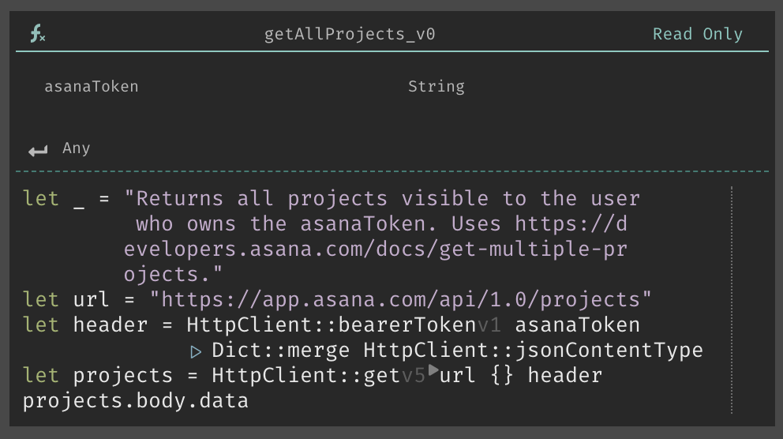It is a workaround hack; not a language feature
Can we have simply implement comments?
Maybe make # a keyword to create a comment line or block? We can but it will go against our founder's language design principle.
In which it states, content not core to the main flow logic of the code should not expand the code vertically. This is why we have Error Rails, instead of letting developers do their own error handling within the main flow of the logic.
How can we allow for users to add comments to their code?
Reflective understanding
- People use comments for 2 reasons:
- To communicate about a complex chunk of code in a natural language.
- To temporarily disable a chunk of code during execution. This can already be achieved with Feature Flags.
Arriving at a solution
Why don't we take page from collaborative document editing software?
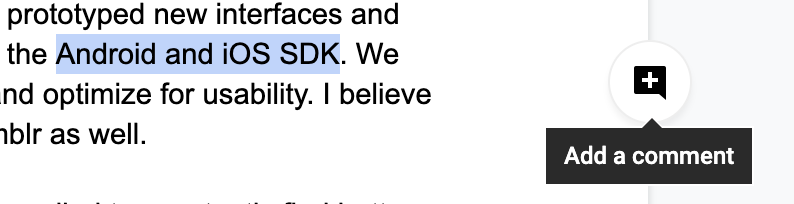Solution
When the developer selects a code chunk they can add a comment to it.
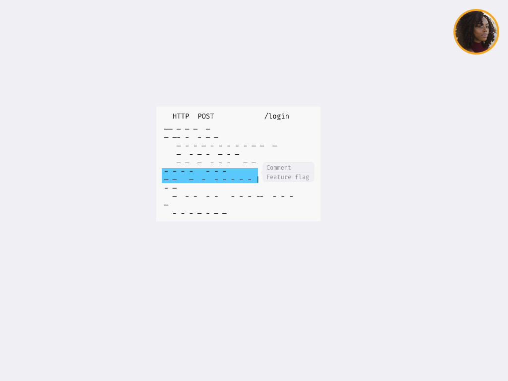They can type in a comment and collapse to hide it.
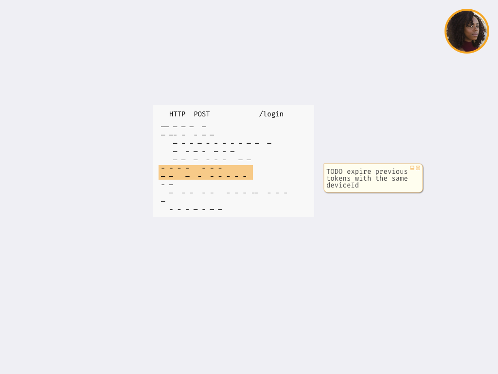Collapsed comment will just show as a marker, and be read on click.
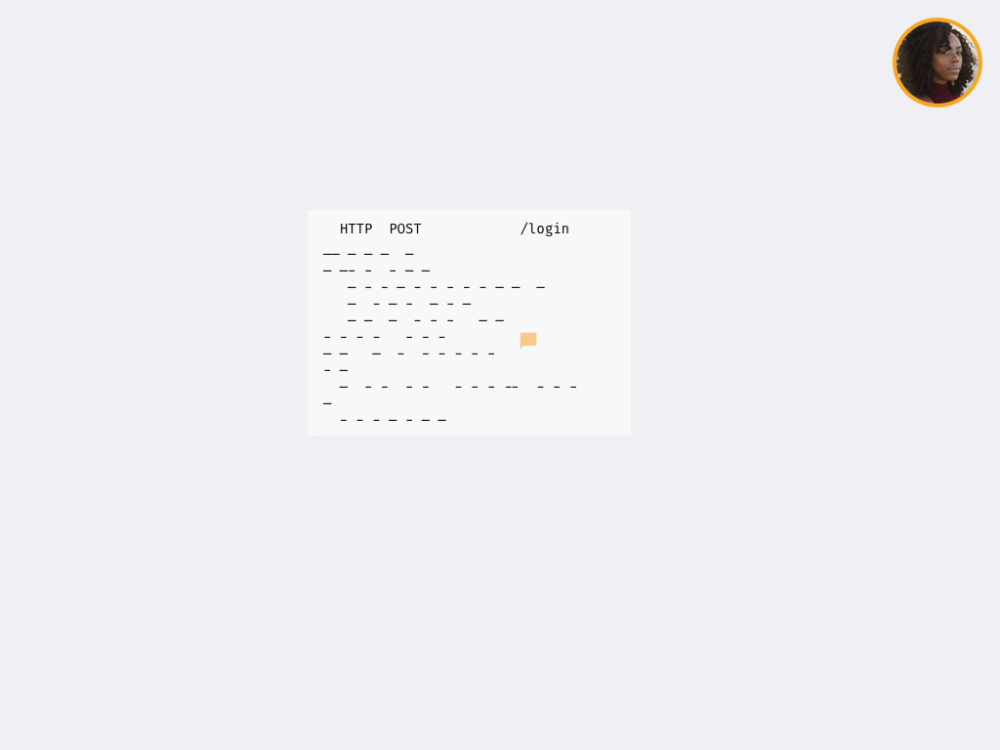Solving: Who wrote what where
Developers need to be able to learn about the codebase. They should be able to find out who to ask for help.
With the popular demand for collaboration features, we have the ability to see other users who are on the same project. 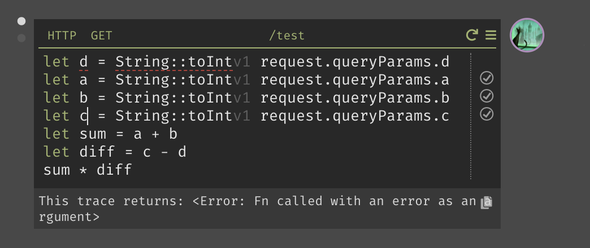
But this feature only shows the user what is happening right now. What if they want to gaze into the past? How can they do that?
How can we show that information without adding more clutter?
Arriving at a solution
Borrowing from image editing...Introducting Layers! As we add more features to Dark, we must give affordances for users to see different things, when performing different tasks. Not everything needs to be on the screen at all once. Layers help us reduce visual noise and solves out our no-space problem.
By activating the change log layer, developers can see who edit last.
Solving: How do I edit code without affecting production?
Developers need to be able to make changes to their codebase without changing production. They need to package their changes for another to review or a deploy
Arriving at a solution
Feature Flags provide a method developers can change and test out their code, before enabling it for all their users. But as of now, they can only flag individual chunks of code at a time.
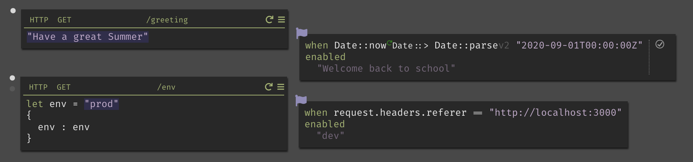But new features or fixes often span across multiple parts of the codebase.
We need a way for developers to batch changes together.
How can we extend feature flags to group changes together and allow someone to review all changes associated with the new feature?
- To do so it would need to do two things:
- Provide support for batching changes under a single feature flag.
- Provide support to review the changes in in a feature flag, UI to request changes or approve changes. And also support for deploying changes either immediately on on a gradual basis.
Solution
When the developer select a semantically valid code chunk, they can feature flag it!
The code in the feature flag will only execute for fellow teammates who enabled this feature flag. Their end-users will still get the production program.
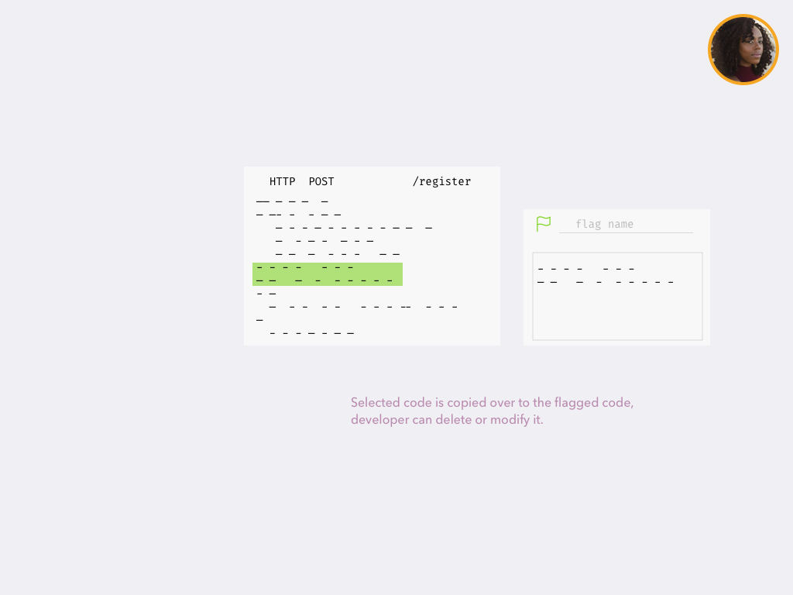Feature flag name field autocompletes with names of active feature flags. Or the developer can enter a unique name to create a new feature flag.
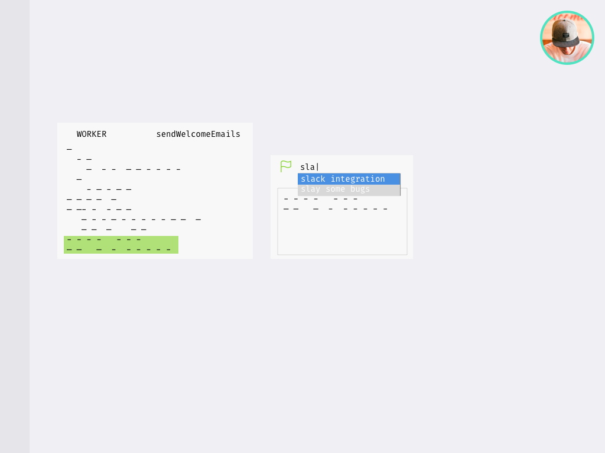Since Dark's code is all online, multiple users can add to the same feature flag without having to push and pull branches. When they are working on a FF with multiple changes, a list of all the changes in that FF pops up.
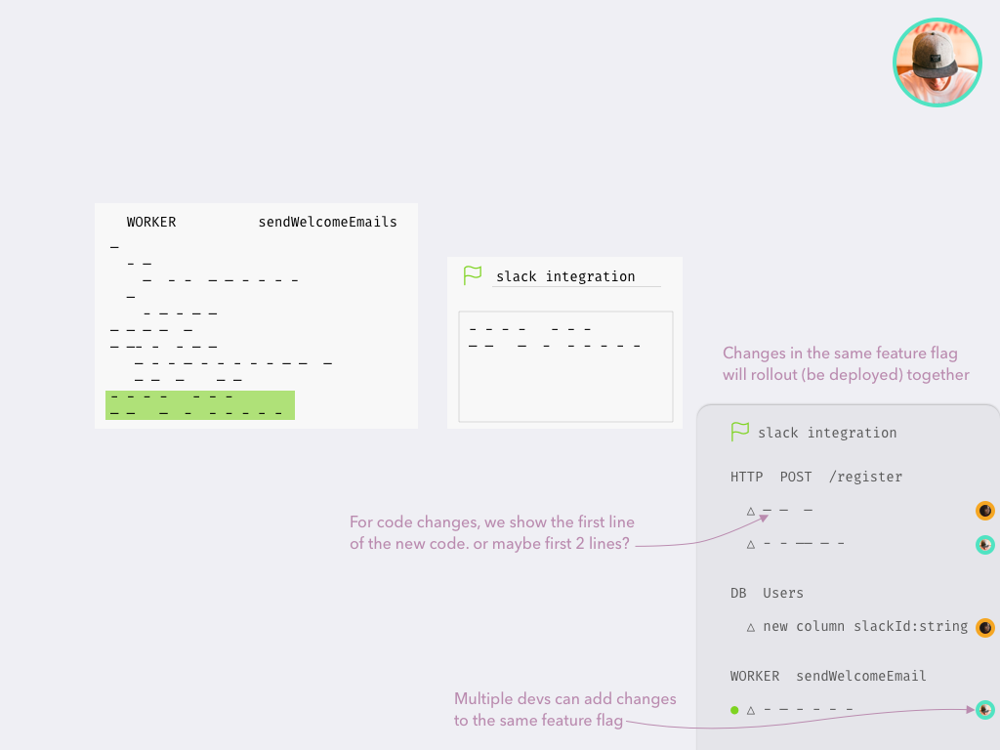Once all changes has been agreed upon by the team. The feature flag is ready to go live!
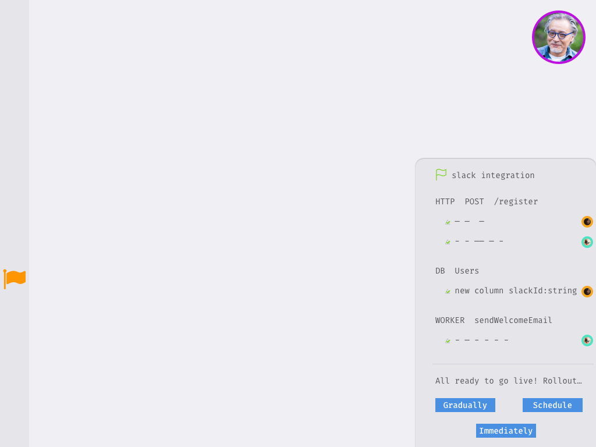Go live! (Rollout)
Rollout is the proccess in with code in the feature flag replaces existing code. After rollout is complete the flag becomes inactive
- There are several different rollout options:
- Gradual rollout will first execute this code for a certain percent of grandusers, and slowly increasing the percent until 100%. At any point during this rollout process, if reports of errors or other problems occur, developers may pause this rollout process.
- Scheduled rollout will have all 100% of grandusers use the new code at a specific date-time. ie: The hour of a week when granduser traffic is at lowest.
- Immediate rollout will have Dark deploy the new code ASAP as soon as the developer clicks the button.
Putting it all together
New developer Ryan joins the team and is tasked to update the registration flow.
Feature Request: After users sign up, send them a slack invite code in their welcome email.
Ryan opens the project's canvas. They read the code and comments other developers had annotated.
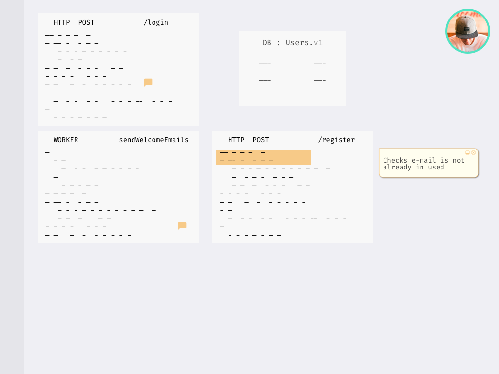But there is one part that is an extremely complex part, and they see Tatianna wrote most of it.
Ryan reaches out to Tatianna, and she walks them through the code. Tatianna helps Ryan, and they pair together to create a fix. She shows them how to create a feature flag.
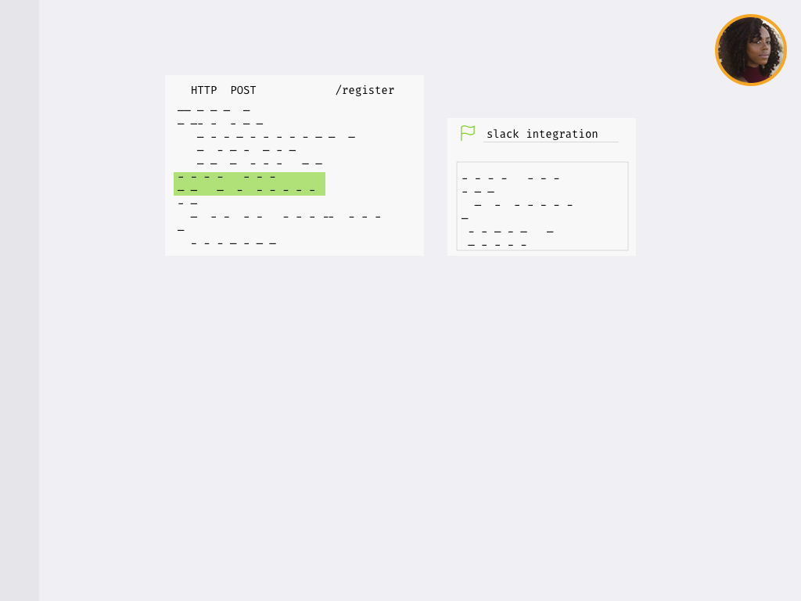Ryan adds more changes on top of Tatianna's feature flag
Ryan packages all changes into the "slack integration" feature flag, and ask Adam to review it.
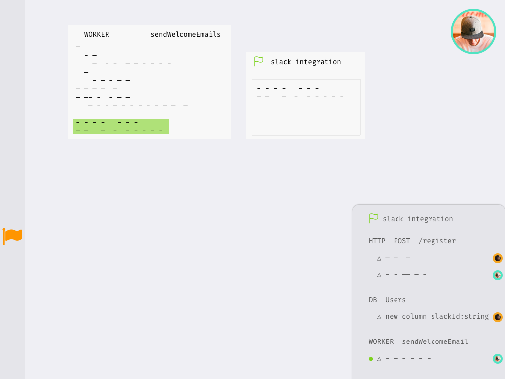Adam gets a notification about a new feature flag in the code base. He goes to review the changes.
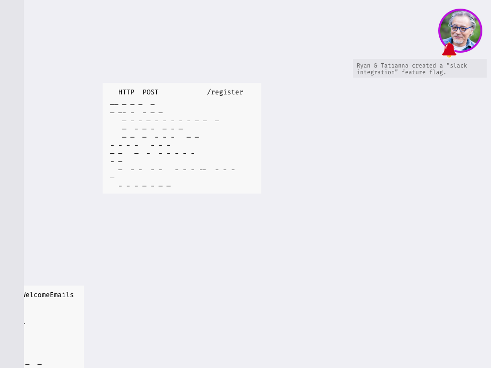Adam rejects the feature flag, requesting additional changes to Ryan's code.
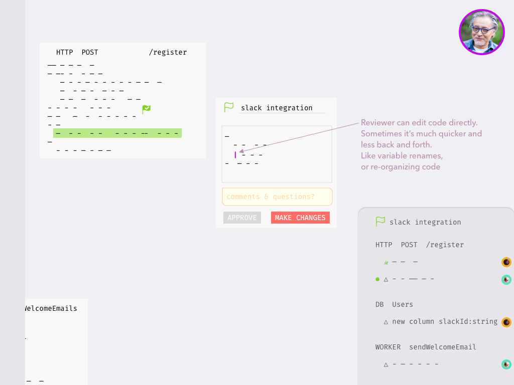Ryan makes suggested changes, and ask Adam to look at it again.

Adam finally approves, and sets a rollout plan for midnight on Sunday.
Everyone is delighted and go out for Happy Hour!
Future Considerations
- We cut scope on this to get out the best ideas within a day. There are additional considerations that would be taken into account in the next phases:
- How do developers set the conditions in which the execution engine should run the flagged version vs production version?
- Who has permission to review?
- Are we going to keep the feature flags as is?
- How do we reverse or halt the deployment of a feature flag?
- Will developers want stricter permissions on who can amend to another's feature flag?
- What should be the UI for gradual and scheduled rollout?